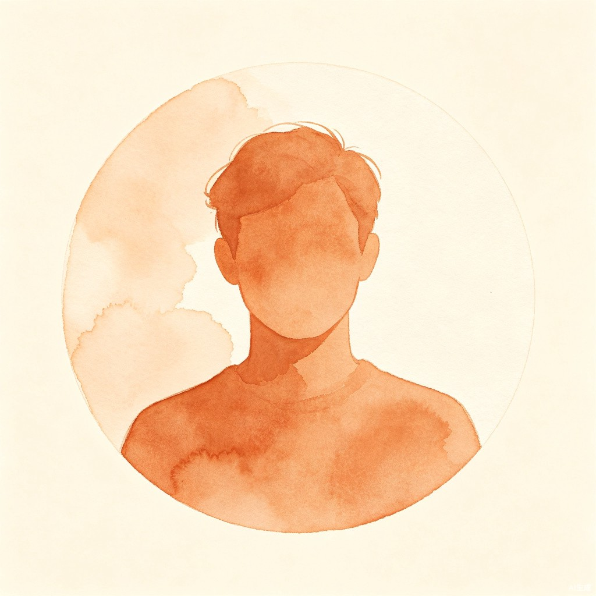

下午好，小暖
今天是个记录好日子

快捷操作
写笔记
加人物
纪念日
提醒
近期提醒
查看全部
妈
妈妈的生日
3月15日 · 还有12天
林
认识纪念日
6月20日 · 还有28天
我的人际关系
6位重要的人
查看图谱 >
我
妈
姐
林
杰
师
家人 2
·
朋友 2
·
同事 1
·
同学 1
认识自己，是一切智慧的开端。
— Aristotle
记录每一天的感受，让成长有迹可循
首页
我的档案
人物图鉴
关系图谱
设置